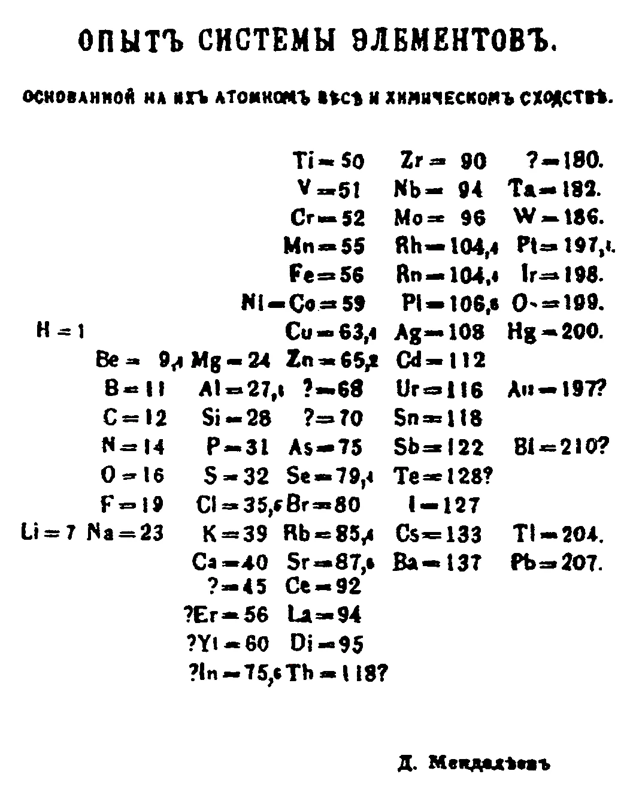
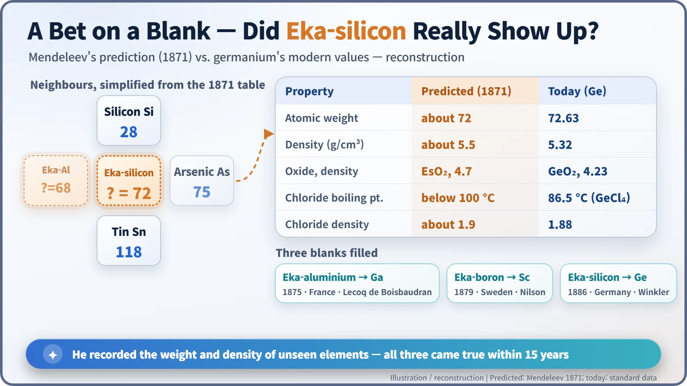
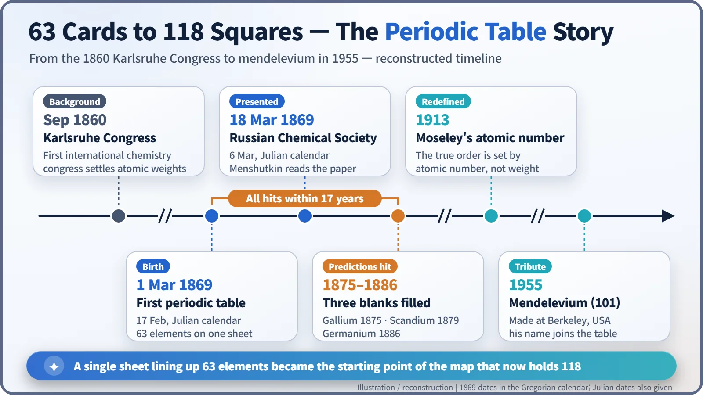

Nuclear History · 003
A Table That Predicted Its Own Blanks — Mendeleev's Periodic Table (1869)
Mendeleev arranged the elements by atomic weight, left question marks where nothing fitted, and watched three of his blanks filled within 17 years.
On 1 March 1869, chemistry professor Dmitri Mendeleev arranged the 63 known elements by atomic weight on a single sheet and, where nothing fitted, left question marks instead of forcing the pattern. Within 17 years three of those blanks were filled by gallium, scandium and germanium, with properties close to what he had written down. The table later found its true ordering principle, atomic number, and became the map on which the nuclear story unfolds.
An element with a job description
In 1886, Clemens Winkler, a chemist in Freiberg, Germany, pulled an unfamiliar element out of a silver mineral called argyrodite. He measured its atomic weight at a little over 72. It was a grey substance with a high melting point, and it formed a dioxide. Here is the strange part: a Russian textbook author had already written this element's job description fifteen years earlier. Atomic weight about 72, density about 5.5, grey, hard to melt, a dioxide with a density of 4.7. How could anyone list the properties of a substance nobody had ever seen? The answer lies in a single sheet of paper drawn up in 1869.
Sixty-three elements and a drawer that wouldn't close
The great headache of mid-19th-century chemistry was filing. Sixty-three elements were known, and nobody could agree on what order they belonged in. Chemists could not even agree on how to weigh them. That changed after September 1860, when the first international chemistry congress met in Karlsruhe, Germany, and settled on a common system of atomic weights. An atomic weight tells you how many times heavier an atom is than the lightest atom, hydrogen, counted as 1. With one ruler for everyone, the elements could finally be compared fairly. [1]
Once the ruler existed, people went hunting for patterns. In England, John Newlands noticed that if you lined the elements up by weight, similar properties came back every eighth element, and he compared it to octaves in music. The Chemical Society in London declined to publish his paper. In Germany, Julius Lothar Meyer printed a table grouping elements in his 1864 book, and he published a more complete one in 1870.
1 March 1869: a textbook author's one-page table
Dmitri Mendeleev (1834–1907), professor of chemistry at the University of St Petersburg, was writing a textbook, Principles of Chemistry (Osnovy khimii). While deciding which order would confuse his students least, he found that when the elements were arranged by atomic weight, their properties repeated at regular intervals, and he summed it up on one sheet. The sheet is dated 17 February 1869 in the Julian calendar that Russia still used; in the Gregorian calendar most of the world uses, that is 1 March. In the 19th century the two calendars were 12 days apart. He had the table printed and mailed to chemists in Russia and abroad. [4]
The formal presentation came at a meeting of the Russian Chemical Society on 6 March (Julian), or 18 March (Gregorian). Mendeleev himself was not there. The society's secretary, Nikolai Menshutkin, read the paper on his behalf. Why he stayed away is still disputed: one long-standing account says he was ill, while another says he was away inspecting cheese cooperatives in the provinces. [3] There is also the famous story that the finished table came to him in a dream, but it comes from an acquaintance's recollection: it is a story often told, not something confirmed in Mendeleev's own records.

The empty squares were the secret weapon
What set Mendeleev's table apart from the other attempts was its gaps. When no known element fitted a spot, he did not force one in; he left a question mark. The 1869 table already shows places like "?=68" and "?=70". By 1871 he went further and gave names to elements that did not yet exist, borrowing the Sanskrit word for "one" to mean "one place below a known element": eka-aluminium, eka-boron and eka-silicon. [2]
He was also willing to bend his own rule. Tellurium is heavier than iodine, yet by its properties tellurium clearly belonged in front. He guessed that tellurium's atomic weight had been measured wrongly. In fact the measurement was right; the real explanation would not arrive for another four decades.

| Property | Predicted for eka-silicon (1871) | Germanium (modern value) |
|---|---|---|
| Atomic weight | about 72 | 72.63 |
| Density (g/cm³) | about 5.5 | 5.32 |
| Oxide and its density (g/cm³) | EsO₂, 4.7 | GeO₂, 4.23 |
| Chloride boiling point | below 100 °C | 86.5 °C (GeCl₄) |
| Chloride density (g/cm³) | about 1.9 | 1.88 |
One by one, the predictions came true. Paul-Émile Lecoq de Boisbaudran of France found gallium in 1875, Lars Fredrik Nilson of Sweden found scandium in 1879, and Winkler found germanium in 1886. Gallium came with a memorable twist. Its discoverer first reported a density of 4.7; Mendeleev suggested he measure again, and the new value came out at about 5.9, so the story goes. A man who had never held the element had corrected its measurement with a sheet of paper. [2]
The real boss of the order: atomic number
In 1882 Britain's Royal Society awarded the Davy Medal jointly to Mendeleev and Meyer, a reminder that periodicity was not one person's discovery. What belonged to Mendeleev alone was the nerve to leave blanks and to put hard numbers on what would fill them.
The tellurium puzzle was solved in 1913 by the English physicist Henry Moseley. Studying the elements with X-rays, he showed that the true order of the table is set not by weight but by the electric charge of the nucleus: the atomic number, or number of protons. Tellurium is number 52, iodine 53. Mendeleev's instinct had been right all along. [1]
The table is also the map on which the nuclear story unfolds. Uranium (number 92), placed at the very end of the 1871 table as the heaviest element, would later take the lead role in nuclear fission, and the empty territory beyond it was settled by new elements made in reactors and accelerators. In 1955 researchers at Berkeley in the United States named newly made element 101 "mendelevium". [5] In 2019 the United Nations and UNESCO marked the 150th anniversary of the first table by declaring the International Year of the Periodic Table. [6] A table that began with 63 elements now fills 118 squares.

Timeline
| Date | Event |
|---|---|
| Sep 1860 | Karlsruhe Congress, the first international chemistry congress, settles atomic weights |
| 1 Mar 1869 (17 Feb, Julian) | Mendeleev's first periodic table |
| 18 Mar 1869 (6 Mar, Julian) | Presented to the Russian Chemical Society, read by Menshutkin |
| 1875 · 1879 · 1886 | Gallium, scandium and germanium discovered |
| 1913 | Moseley redefines the order by atomic number |
| 1955 | Element 101, mendelevium |